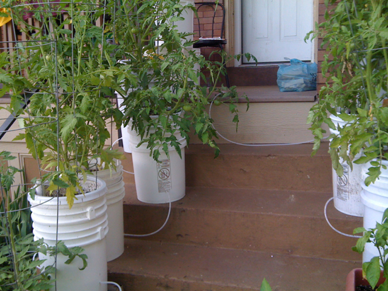
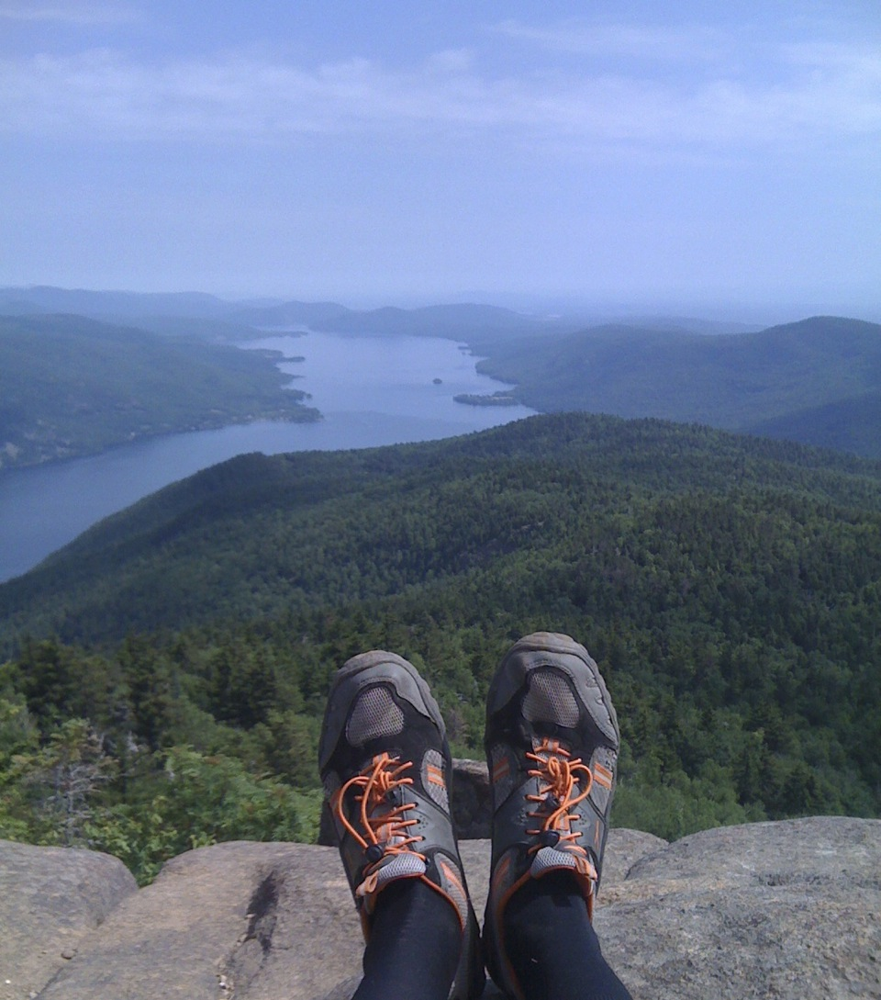
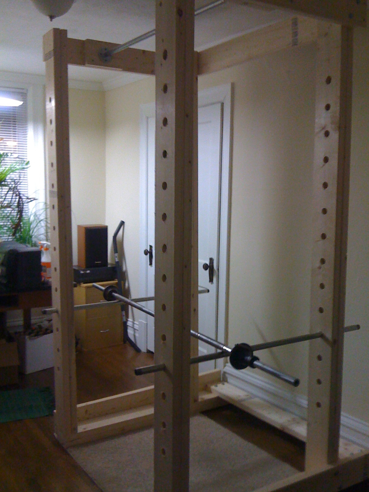

Smart Gardening
I enjoy growing many different types of fruits and vegetables, but tomatoes are my favorite. The taste of a freshly picked, ripe tomato can't be matched by one purchased in a store.
All of my plants are grown in custom 5 gallon self-watering pots filled by an automated gravity fed watering system I built. The reservoir at the top is filled once daily with an automated timer and each pot is chained together. As the water makes its way down the chain, each reservoir at the bottom of each pot is filled in series. A wick in the pot bottoms, allows the capillary action to pull water from the reservoir into the potting medium to feed the plant water. The system saves me 20 minutes a day during growing season.
Building Stuff
If I choose to build something, I try to get my use out of it, so I usually only build multi-purpose devices. One such item is a PID controller unit which can be used to cook sous vide, make yogurt, dehydrate fruits and vegetables, proof bread, and the list goes on.
The device basically lets me control any contained environment within 3 degrees using a plugin device. The controller is able to take readings off of a thermocouple and turn a high current switch on and off to start and stop generating heat from the plugged in device. So I am able to hold items in a crockpot or use an incandescent light bulb to warm an oven and keep it at a constant temperature to perform many tasks.

Solo Backpacking
Hiking in nature is an amazing experience that I love to do whenever possible. It is such a simple thing, but provides so much value allowing me to clear my head and recharge.
Recently, I went solo backcountry camping in the beautiful Adirondacks in New York. It was an amazing experience I would recommend trying to go out alone for a couple of days at least once in your life. The feeling of self-reliance and accomplishment when you are done is very empowering.
Making Delicious Food
I love to cook, almost as much as I love to eat. I have a long list of food items I would like to perfect and only have a few checked off thus far. Methodically, I working my way through each one at a time, running my own kitchen experiments searching for the write ingredients, ratios, and preparation methods.
I have aspirations of becoming a top notch baker, pizza maker, and master of fermentation, but still have a long way to go.
HIITs Training
Exercising is something I enjoy doing daily. It provides a daily feeling of accomplishment and cleanliness. It is the perfect way to start my work days.
I built another multi-purpose device to improve my efficiency, a custom power rack for weight lifting. It is the most versatile piece of a equipment a gym can have. I can do an entire body workout with this single simple piece of equipment and some weights.
It is also perfect for the High Intensity Interval Training (HIITs) Training I do. I am able to quickly reconfigure the rack for new exercises in less than 30 seconds, which is my break time between sets. It takes up a large amount of space and weighs a ton, but it was well worth building.
Making What is Old New Again
There is something about taking something that has been discarded or overlooked and making it shine. I think this is what draws me to data as well. Finding something of value everyone else ignores provides abundant personal joy to me.
I have repaired, fixed, and rebuilt many things, but one of my favorites is my old Columbia 10-speed. It is the same one I was ridden around in when I was a small child. After sitting in a garage for years untouched, I stripped it all down and completely rebuilt it. I put a couple hundred miles on it and it works as well as it did when I was child.